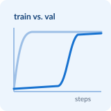
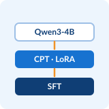

Nguyen Khanh HuyenI am an AI researcher interested in the mathematical foundations of modern machine learning. My work centers on the optimization dynamics of deep learning (grokking, SGD trajectories, implicit-depth models), safety-preserving parameter-efficient adaptation of foundation models, and the statistical and geometric foundations of generalization. I studied International Business Economics at Foreign Trade University in Hanoi, graduating one year early with a GPA of 3.68 (Top 1%). I came to machine learning from mathematical olympiads and quantitative economics, and I am now moving toward doctoral research in optimization theory and large-scale language model training. I am a research assistant at FTU Labs under Dr. Phung Duy Quang, and a machine learning engineer at Venera AI, where I adapt LLMs for Vietnamese Traditional Medicine. Email / Google Scholar / GitHub / Facebook |

|
Peer-reviewed journal papers are listed below.
Ongoing research and engineering work.
|
 |
FTU Labs, ongoing code Extending Grokfast (Lee et al., 2024) with SVD-based gradient filtering and spectral embedding initialization from input co-occurrence statistics. Singular-spectrum diagnostics show gradient updates do not lie in a low-rank subspace, motivating a hybrid temporal–spatial filter on the optimizer trajectory. |
|
|
FTU Labs, ongoing code Weight-tied DEQ Transformer with Anderson-accelerated fixed-point iteration, trained under a Pretrain → Distillation → Jacobian-regularized curriculum. Newton–Schulz-orthogonalized Muon updates impose an implicit spectral constraint and yield a smaller train/val-loss gap than the Transformer baseline at matched parameters. |
|
 |
Venera AI, 2025–2026 venerian.space Two-stage CPT → SFT pipeline for Qwen3-4B on Vietnamese Traditional Medicine using Unsloth 4-bit + LoRA and DeepSpeed ZeRO-2/3. Reached 55.24% on a domain MCQ benchmark (vs. 53.33% baseline) with 0% format deviation, and a FastAPI/vLLM serving stack cut inference latency by ~40%. |
A "Risky but Worth It" Year at FTU: 2 Months of C++ and My First AI Competition · Dec. 2025